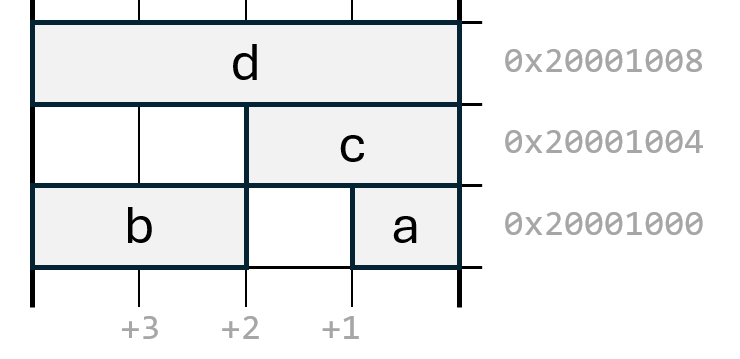

In this lecture, we will first introduce how C handles advanced data types in a general sense. We will then introduce the Basic Timers on our microcontroller, and use them as an example for how these datatypes can be used to create a nice interface to peripheral devices.
In real programs, we naturally require data types that describe more
complex objects than a single integer.
In this chapter, we examine how such compound data types can be created
in C.
typedefOne of the simplest mechanisms in C for creating a new name for an
existing data type is the typedef keyword:
typedef <existing name> <name of aliased data type>This can be useful in many situations. For instance, we have already
discussed the use of the header file stdint.h to obtain
clearer and more explicit names for integers of different sizes. This is
achieved using typedef. For our machine it looks something
like:
typedef signed long long int64_t;
typedef unsigned long long uint64_t;
typedef signed long int32_t;
typedef unsigned long uint32_t;
typedef signed short int16_t;
typedef unsigned short uint16_t; It is important to note that typedef does not introduce a new type, but rather creates an alias for an existing one.
For more complex data types, we use structures. These may
look familiar to those accustomed to classes in other
languages, but a struct in C is a much simpler concept. It
cannot have methods, constructors, inheritance, or other object-oriented
features. Instead, it is simply a compound data type consisting of a
collection of other data types.
A simple example of using a struct is shown below:
struct Player {
int score;
int health;
};
int main() {
struct Player player_one;
player_one.score = 0;
player_one.health = 100;
}In this example, player_one is an instance of the struct
Player. It has two fields, score and
health, which can be accessed using the notation
player_one.score and player_one.health.
Note that, for largely historical reasons (and unlike most modern
languages), the name of the struct (Player) is not itself a
type in C. Consequently, the first declaration below is invalid:
Player player_one; // Incorrect
struct Player player_one; // CorrectThe struct keyword must precede the name. To avoid this
inconvenience, we can use typedef:
typedef struct {
int score;
int health;
} Player;
Player player_one; // CorrectHere, we create an alias for an unnamed struct containing
the fields score and health. The alias
Player can then be used as a normal data type, in a manner
similar to other languages.
structA struct can be initialised at the point of declaration:
Player player_one = { 0, 100 };The values inside the braces are assigned to the fields in the order in which they appear in the struct definition. C also allows designated initialisers:
Player player_one = { .score = 0, .health = 100 };In this case, the fields may be listed in any order, and any field not explicitly initialised is set to zero.
A struct may itself contain other structs as fields. In the following example, we first define a struct representing a two-dimensional coordinate, and then a struct representing a line segment:
typedef struct { int x; int y; } Coord2D;
typedef struct {
Coord2D start, end;
} Line;Alternatively, we may define anonymous structs directly within another struct:
typedef struct {
struct { int x; int y; } start, end;
} Line;In this case, two instances (start and end)
of an unnamed struct are declared as fields of the Line
struct.
In either approach, the nested structures may be accessed like any other field:
int main()
{
Line line = { {1, 2}, {3, 4} };
line.start.x += 1;
}structsWhen a variable of struct type is declared, it occupies a contiguous region of memory, just like any other variable. The fields of the struct are laid out in memory in the order of declaration, together with the fields of any nested structs.
The exact layout must respect alignment requirements, which may introduce padding bytes. We will discuss this later in the lecture.
As with any data type, a struct can be referenced through a pointer. Since structs can be relatively large, they are commonly passed to functions by pointer rather than by value:
typedef struct {
char title[100];
char author[100];
int num_pages;
short ISBN;
} Book;
void ProcessBook(Book * book);
int main() {
Book book;
strcpy(book.title, "Middlemarch");
strcpy(book.author, "George Elliot");
book.num_pages = 370;
book.ISBN = 1234;
ProcessBook(&book);
}Passing a pointer avoids copying the entire structure onto the stack, which can be expensive in terms of both memory usage and performance.
Because pointers to structs are so common, C provides a special
operator for accessing fields through a pointer. The two lines below do
exactly the same thing, but the arrow notation (->) is
easier to read.
void ProcessBook(Book * book)
{
(*book).num_pages = 100;
book->num_pages = 100;
}In some situations, two structs must refer to each other, or a struct must refer to itself. Consider the following example:
typedef struct {
char * name;
int birth_date;
Book * best_book; // Incorrect
} Author;This code fails because Book has not yet been declared.
Reordering the declarations would simply reverse the problem. To resolve
this, we use incomplete declarations:
struct Book;
struct Author;
typedef struct Author {
char * name;
int birth_date;
struct Book * best_book;
} Author;
typedef struct Book {
char * title;
Author * author;
} Book;
int main()
{
Author author = { "George Eliot", 1819 };
Book book = { "Middlemarch", &author };
author.best_book = &book;
}Here, we inform the compiler that the structs Book and
Author exist, without yet defining them. This allows us to
use pointers to these types. Since a pointer has a fixed size, the
compiler does not need to know the full definition at this stage.
In low-level or hardware-oriented programming, it is often desirable to minimise memory usage. Consider the following example:
typedef struct {
char is_alive; // Needs 1 bit
char age; // If we allow ages up to 100, we need 7 bits
char strength; // Strength is expressed with a number from 0–10 (we need 4 bits)
short num_bananas; // 0 to 1000 (we need 10 bits)
} Monkey;Even though small data types are used, alignment requirements normally result in a size of 6-8 bytes. Since only 22 bits of information are required, this is inefficient.
C allows the use of bit fields to address this:
typedef struct {
unsigned int is_alive : 1;
unsigned int age : 7;
unsigned int strength : 4;
unsigned int num_bananas : 10;
} Monkey;On our machine, the compiler packs these fields into a single
unsigned int and automatically performs the necessary bit
manipulation.
It should be noted that the C standard provides few guarantees regarding the packing, ordering, and alignment of bit fields; these properties are therefore implementation-defined. As a result, their use is often discouraged in portable C code. In low-level programming contexts—such as targeting a specific microcontroller with a well-defined compiler and ABI—bit fields can nevertheless be extremely useful.
Another memory-saving construct in C is the union. Consider the following struct:
typedef struct {
int speed;
int weight;
short type; // 0 = CAR, 1 = BOAT, 2 = AIRPLANE
char num_wings;
char num_sails;
short num_wheels;
} Vehicle;Only one of the last three fields is meaningful at any given time. A union allows these fields to share the same memory:
typedef struct {
int speed;
int weight;
short type;
union {
char num_wings;
char num_sails;
short num_wheels;
};
} Vehicle;Finally, we consider enumerations (enum). An
enumeration allows us to use meaningful names rather than numeric
constants:
enum VEHICLE_TYPE { CAR, BOAT, AIRPLANE };
typedef struct {
int speed;
int weight;
enum VEHICLE_TYPE type;
union { ... };
} Vehicle;Before we move on to describe how structs can be helpful for modelling peripheral register blocks, let us first discuss where the members of a struct are actually placed in memory.
Consider a struct S, and ask where in memory the members
a, b, c, and d will
reside:
typedef struct {
char a;
short b;
short c;
int d;
} S;
S s; // Define a struct `s` of type SWhen the variable s is defined, the compiler and linker
allocate memory for it somewhere in SRAM. Suppose that s
starts at address 0x20001000. Memory for the members of the
struct is allocated in the same order in which they are declared.

The member s.a therefore resides at address
0x20001000 and occupies one byte. The next member,
s.b, ends up at address
0x20001002, leaving one byte of unused
space between the two members.
The reason for this is that the member short b occupies
two bytes and must be located at a memory address divisible by two (see
the previous lecture on alignment). The following member,
short c, is also two bytes wide. Since the next available
address after b is already divisible by two, c
is placed at address 0x20001004.
The final member, int d, is four bytes wide and
therefore cannot be placed immediately after c. The
compiler must leave two bytes of unused space and place d
at address 0x20001008, which is divisible by four.
At this point, it is worth asking how the starting address of the
struct itself is chosen. If the struct were placed, for example, at
address 0x20001001, then the members b,
c, and d would all be misaligned. For this
reason, the compiler ensures that the starting address of a struct is
aligned to the alignment requirement of its largest member.
Because of alignment rules, structs may occupy more memory than the sum of the sizes of their individual members, which may prompt the question of whether the compiler should attempt to minimise space usage by rearranging members. In practice, it does not. The placement of the members of a structure in memory must be directly inferable from its definition. If the rules governing layout were not simple and well defined, different compilers could produce incompatible memory layouts, making correct linking and interoperability unreliable.
Note: That said, there are compiler-specific attributes you can add to adjust how members are aligned in a struct, but that is not necessary for this course.
The typical task for a microcontroller usually involves doing things at precise times (start an alarm when a door has been open for exactly 10 seconds), often at periodic intervals (blink the orange led every second), and often very short intervals (flip a GPIO pin every ms to create a 1MHz clocksignal). We have already seen how SysTick can be used for this purpose, but a single timer is often not enough. Most microcontrollers therefore have a number of extra timers of varying types.
Our microcontroller is equipped with 10 timers in total, and in this
section we will introduce the two simplest ones (TIMER6 and
TIMER7). The description of these timers, from the
quickguide, is given below:
Base addresses:
TIM6:0x400010000x40001400| offset | 31 | 30 | 29 | 28 | 27 | 26 | 25 | 24 | 23 | 22 | 21 | 20 | 19 | 18 | 17 | 16 | 15 | 14 | 13 | 12 | 11 | 10 | 9 | 8 | 7 | 6 | 5 | 4 | 3 | 2 | 1 | 0 | Register |
|---|---|---|---|---|---|---|---|---|---|---|---|---|---|---|---|---|---|---|---|---|---|---|---|---|---|---|---|---|---|---|---|---|---|
| 0x0 | CTLR1 | ||||||||||||||||||||||||||||||||
| 0x4 | CTLR2 | ||||||||||||||||||||||||||||||||
| 0xC | DMAINTENR | ||||||||||||||||||||||||||||||||
| 0x10 | INTFR | ||||||||||||||||||||||||||||||||
| 0x14 | SWEVGR | ||||||||||||||||||||||||||||||||
| 0x24 | CNT | ||||||||||||||||||||||||||||||||
| 0x28 | PSC | ||||||||||||||||||||||||||||||||
| 0x2C | ATRLR | ||||||||||||||||||||||||||||||||
control register 1
| 31 | 30 | 29 | 28 | 27 | 26 | 25 | 24 | 23 | 22 | 21 | 20 | 19 | 18 | 17 | 16 | 15 | 14 | 13 | 12 | 11 | 10 | 9 | 8 | 7 | 6 | 5 | 4 | 3 | 2 | 1 | 0 | ARPE | OPM | URS | UDIS | CEN |
|---|
control register 2
| 31 | 30 | 29 | 28 | 27 | 26 | 25 | 24 | 23 | 22 | 21 | 20 | 19 | 18 | 17 | 16 | 15 | 14 | 13 | 12 | 11 | 10 | 9 | 8 | 7 | 6 | 5 | 4 | 3 | 2 | 1 | 0 | MMS |
|---|
DMA/Interrupt enable register
| 31 | 30 | 29 | 28 | 27 | 26 | 25 | 24 | 23 | 22 | 21 | 20 | 19 | 18 | 17 | 16 | 15 | 14 | 13 | 12 | 11 | 10 | 9 | 8 | 7 | 6 | 5 | 4 | 3 | 2 | 1 | 0 | UDE | UIE |
|---|
status register
| 31 | 30 | 29 | 28 | 27 | 26 | 25 | 24 | 23 | 22 | 21 | 20 | 19 | 18 | 17 | 16 | 15 | 14 | 13 | 12 | 11 | 10 | 9 | 8 | 7 | 6 | 5 | 4 | 3 | 2 | 1 | 0 | UIF |
|---|
event generation register
| 31 | 30 | 29 | 28 | 27 | 26 | 25 | 24 | 23 | 22 | 21 | 20 | 19 | 18 | 17 | 16 | 15 | 14 | 13 | 12 | 11 | 10 | 9 | 8 | 7 | 6 | 5 | 4 | 3 | 2 | 1 | 0 | UG |
|---|
counter
| 31 | 30 | 29 | 28 | 27 | 26 | 25 | 24 | 23 | 22 | 21 | 20 | 19 | 18 | 17 | 16 | 15 | 14 | 13 | 12 | 11 | 10 | 9 | 8 | 7 | 6 | 5 | 4 | 3 | 2 | 1 | 0 | CNT |
|---|
prescaler
| 31 | 30 | 29 | 28 | 27 | 26 | 25 | 24 | 23 | 22 | 21 | 20 | 19 | 18 | 17 | 16 | 15 | 14 | 13 | 12 | 11 | 10 | 9 | 8 | 7 | 6 | 5 | 4 | 3 | 2 | 1 | 0 | PSC |
|---|
When the counter reaches this value, it is reset to 0. Maximum 16 bits (65536).
| 31 | 30 | 29 | 28 | 27 | 26 | 25 | 24 | 23 | 22 | 21 | 20 | 19 | 18 | 17 | 16 | 15 | 14 | 13 | 12 | 11 | 10 | 9 | 8 | 7 | 6 | 5 | 4 | 3 | 2 | 1 | 0 | ATRLR |
|---|
We will configure and start the timer using the CTLR1
register. The CNT register holds the current counter value.
When the counter value reaches the value in the ATRLR
register, the first bit in the INTFR register is set.
Note that all the registers are only 16 bits wide, so the CNT
register will overflow when it reaches 65536. Since the timer updates at
144MHz, that will happen after 455us (!). Since we often have to have
longer delays than that, there is also a prescaler register,
PSC. If PSC is non-zero, the counter increments once every
PSC + 1 input clock ticks. If, for instance, we set PSC to
9, CNT will not reach its maximum value until after
4550us.
We will return to using the timer later, but for now we are interested in how we can write elegant C code to interact with the registers.
Previously, we have interfaced with peripheral registers by creating
a #define statement per register. We could do this for this
peripheral as well, like:
#define TIM6_CTLR1 ((volatile uint16_t *)0x40001000)
#define TIM6_CTLR2 ((volatile uint16_t *)0x40001004)
// <same for remaining register>, and then
#define TIM7_CTLR1 ((volatile uint16_t *)0x40001000)
// ...But this quickly gets tedious and error prone. In this section we will show how you can define the register block once with a C struct, and then use it for all identical peripherals.
A first attempt at doing this could look as follows:
typedef struct {
uint32_t CTLR1;
uint32_t CTLR2;
uint32_t reserved0;
uint32_t DMAINTENR;
uint32_t INTFR;
uint32_t SWEVGR;
uint32_t reserved1;
uint32_t reserved2;
uint32_t reserved3;
uint32_t CNT;
uint32_t PSC;
uint32_t ATRLR;
} TIMER;
volatile TIMER * timer6 = (TIMER *)0x40001000;
volatile TIMER * timer7 = (TIMER *)0x40001400;
void main()
{
timer6->CNT = 0; // Clear the counter
// ...
}There are a few things to unravel to understand why this works. First, consider what happens if we write:
TIMER t;
void main()
{
return;
}This (slightly pointless) program would be compiled such that an
empty variable, t, of type TIMER was placed
somewhere in SRAM. Let’s say that it ended up on address
0x20001000. The order of struct members is strictly defined
by the C standard, and their alignment and padding are defined by the
ABI for the target architecture, so if we knew that the address to the
struct t was 0x20001000, we also know that its
first member (CTLR1) begins at that address. Since
CTLR1 is exactly 4 bytes, the address of the second member
(CTLR2) will have to be 0x20001004, and so
on.
When we write:
volatile TIMER * timer6 = (TIMER *)0x40001000;we say that we want a pointer to a struct of type timer that
begins at address 0x40001000. We have not put any struct
there (we can’t, it is not in SRAM) but the compiler doesn’t know that.
When we write:
timer6->CNT = 0;The compiler will calculate what the address must be for the
CNT member of a struct that starts on address
0x40001000. This will result in assembly code looking
something like:
la t0, 0x40001024
li t1, 0
sw t1, 0(t0) which is exactly what we would write to write the value zero
to the TIM6_CNT register. We are using the compiler’s
knowledge of struct layout to perform the address calculations for
us.
For this to work, we have to be careful when looking at the offsets
of each register. It is easy to miss, for instance, that
DMAINTENR begins at offset 0xC which is
not directly after CTLR2. When there is empty
space between registers, we have to insert as many bytes of “reserved”
variables, so that the address calculation for the next register becomes
correct.
In our first attempt at writing a struct that describes a Basic
Timer, we carelessly forgot that all the registers are actually 16 bits
wide. In this case, writing to, e.g., CNT with a 32-bit
store operation works. The upper 16 bits are simply ignored. In many
cases, however, this can be a very bad idea:
A first attempt at fixing this might look like:
typedef struct {
uint16_t CTLR1;
uint16_t CTLR2;
uint16_t DMAINTENR;
uint16_t INTFR;
uint16_t SWEVGR;
uint16_t CNT;
uint16_t PSC;
uint16_t ATRLR;
} TIMER;
volatile TIMER * timer6 = (TIMER *)0x40001000;But this would fail disastrously. Why?
CTLR1 would still be correct, but since
CTLR1 is just 2 bytes, the compiler would calculate the
address to CTLR2 as 0x40001002. We need to tell the
compiler that there are two unused bytes between these two members.
To solve this, we will explicitly put padding bytes into the structure:
typedef struct {
uint16_t CTLR1; uint16_t _pad0;
uint16_t CTLR2; uint16_t _pad1;
uint32_t reserved0;
uint16_t DMAINTENR; uint16_t _pad2;
uint16_t INTFR; uint16_t _pad3;
uint16_t SWEVGR; uint16_t _pad4;
uint32_t reserved1;
uint32_t reserved2;
uint32_t reserved3;
uint16_t CNT; uint16_t _pad5;
uint16_t PSC; uint16_t _pad6;
uint16_t ATRLR; uint16_t _pad7;
} TIMER; This way, the compiler knows to access all members as halfwords, and the address of each member will still be correct.
To give us an even nicer interface, let’s look closer at the
CTLR1 register:
control register 1
| 31 | 30 | 29 | 28 | 27 | 26 | 25 | 24 | 23 | 22 | 21 | 20 | 19 | 18 | 17 | 16 | 15 | 14 | 13 | 12 | 11 | 10 | 9 | 8 | 7 | 6 | 5 | 4 | 3 | 2 | 1 | 0 | ARPE | OPM | URS | UDIS | CEN |
|---|
Let’s say we just want to start the timer. We could write:
#define TIM6_CTLR1_CEN_BIT 0x1
...
timer6->CTLR1 |= TIM6_CTLR1_CEN_BIT;But we can get much simpler code by using bitfields. The register itself could be described in a struct as:
typedef struct {
uint16_t cen:1;
uint16_t udis:1;
uint16_t urs:1;
uint16_t opm:1;
uint16_t :3; // Three reserved bits
uint16_t arpe:1;
uint16_t :8; // Eight reserved bits
} CTLR1_t;And we can put this into our full struct as:
typedef struct {
CTLR1_t ctlr1; uint16_t _pad0;
uint16_t CTLR2; uint16_t _pad1;
uint16_t reserved0;
uint16_t DMAINTENR; uint16_t _pad2;
uint16_t INTFR; uint16_t _pad3;
uint16_t SWEVGR; uint16_t _pad4;
uint32_t reserved1;
uint32_t reserved2;
uint32_t reserved3;
uint16_t CNT; uint16_t _pad5;
uint16_t PSC; uint16_t _pad6;
uint16_t ATRLR; uint16_t _pad7;
} TIMER;
volatile TIMER * timer6 = (TIMER *)0x40001000;Now, we can enable the timer by simply writing:
void main()
{
timer6->ctlr1.cen = 1;
}While bitfields can give us much nicer looking code, it might not always be the fastest possible code. Let’s say we want to start the timer in one-pulse mode, with interrupts disabled (all other bits set to zero):
timer6->ctlr1.udis = 1; // Disable interrupts
timer6->ctlr1.opm = 1; // One-pulse mode
timer6->ctlr1.cen = 1; // EnableThis could turn into three read-modify-write operations.
When we had CTLR1 as a uint16_t, we could have done all of
this in one write operation:
timer6->CTLR1 = 0b1011;Sometimes, speed matters more than elegance, and vice versa. Luckily, we can allow either way of accessing the register using unions:
typedef struct {
union { uint16_t CTLR1; CTLR1_t ctlr1; }; uint16_t _pad0;
uint16_t CTLR2; uint16_t _pad1;
uint32_t reserved0;
uint16_t DMAINTENR; uint16_t _pad2;
uint16_t INTFR; uint16_t _pad3;
uint16_t SWEVGR; uint16_t _pad4;
uint32_t reserved1;
uint32_t reserved2;
uint32_t reserved3;
uint16_t CNT; uint16_t _pad5;
uint16_t PSC; uint16_t _pad6;
uint16_t ATRLR; uint16_t _pad7;
} TIMER; CTLR1 and ctlr1 now occupy the same 16 bits
in memory, so reading or writing through either name accesses the same
hardware register.
timer6->CTLR1 = 0b1011; // fast, single write
timer6->ctlr1.arpe = 1; // readable, fine-grained accessBelow is a complete example where we have defined every bit of the basic timer carefully, with bitmasks and unions, along with a function that uses the struct to delay for one second.
#include <stdio.h>
#include <stdint.h>
typedef struct {
uint16_t CEN :1; // bit 0
uint16_t UDIS :1; // bit 1
uint16_t URS :1; // bit 2
uint16_t OPM :1; // bit 3
uint16_t :3; // bits 4–6 reserved
uint16_t ARPE :1; // bit 7
uint16_t :8; // bits 8–15 reserved
} CTLR1_t;
typedef struct {
uint16_t :4; // bits 0–3 reserved
uint16_t MMS :3; // bits 4–6
uint16_t :9; // bits 7–15 reserved
} CTLR2_t;
typedef struct {
uint16_t UIE :1; // bit 0
uint16_t :7; // bits 1–7 reserved
uint16_t UDE :1; // bit 8
uint16_t :7; // bits 9–15 reserved
} DMAINTENR_t;
typedef struct {
union { uint16_t CTLR1;
CTLR1_t ctlr1; };
uint16_t _pad0; // 0x00
union { uint16_t CTLR2;
CTLR2_t ctlr2; };
uint16_t _pad1; // 0x04
uint16_t _reserved0; uint16_t _pad2; // 0x08
union { uint16_t DMAINTENR;
DMAINTENR_t dmaintenr; };
uint16_t _pad3; // 0x0C
uint16_t INTFR; uint16_t _pad4; // 0x10
uint16_t SWEVGR; uint16_t _pad5; // 0x14
uint16_t _reserved1; uint16_t _pad6; // 0x18
uint16_t _reserved2; uint16_t _pad7; // 0x1C
uint16_t _reserved3; uint16_t _pad8; // 0x20
uint16_t CNT; uint16_t _pad9; // 0x24
uint16_t PSC; uint16_t _pad10; // 0x28
uint16_t ATRLR; uint16_t _pad11; // 0x2C
} TIMER_t;
volatile TIMER_t * timer6 = (TIMER_t *)0x40001000;
void delay_1s(void)
{
timer6->ctlr1.CEN = 0; /* 1. Stop timer */
timer6->PSC = 14399; /* 2. Prescaler: 144 MHz / (14399 + 1) = 10 kHz */
timer6->ATRLR = 9999; /* 3. Auto-reload: 10000 ticks = 1 second */
timer6->SWEVGR = 1; /* 4. Load PSC and ATRLR */
timer6->INTFR = 0; /* 5. Clear update flag */
timer6->ctlr1.CEN = 1; /* 6. Enable timer */
while (timer6->INTFR == 0); /* 7. Wait for overflow */
timer6->ctlr1.CEN = 0; /* 8. Stop timer (optional) */
timer6->INTFR = 0; /* 9. Clear flag */
}
int main(void)
{
while(1) {
printf("Hello every second!\n");
delay_1s();
}
}Related chapters in work-book:
Chapter 1.8 (pages 67-73)
Chapter 3.4 (pages 107-108)